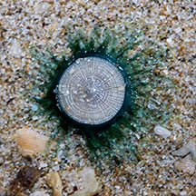
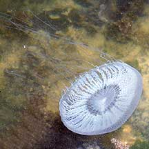

|
|
|
Hydroids
Class Hydrozoa
updated
May 2020
if you
learn only 3 things about them ...
 Often mistaken for plants, they are animals! Often mistaken for plants, they are animals!
Some can sting powerfully. Don't touch them.
Each
'bush' is a colony of many little polyps. |
|
Where
seen? A wider variety of those that are large and attached to hard surfaces are commonly encountered on our
Northern intertidal shores. Forming colourful fluffy patches. Some fiery stinging ones are also commonly seen on our Southern
Islands. They are often overlooked as they resemble plants. Many small to tiny jellyfish-like hydroids are recorded in the water (unattached to surfaces).
What are hydroids? They belong
to Phylum Cnidaria. 'Hydrozoa' means
'water animals' in Greek. Hydrozoans may look like jellyfish or appear to be branching plants. There are about 3,000 known species
of the Class Hydrozoa.
Features: Hydroids are colonial animals. The polyps are
tiny (1mm tall with a smaller diameter). In branching forms, the polyps
are encased in a 'skin' made of chitin (the same substance that insect
exoskeleton is made of). In some, each polyp lives in a bell-shaped
'container' with a lid. The colony often takes on feathery, branching
plant-like forms. The branches arise from a central stalk that is
attached to a hard surface. |

Colourful Candy hydroids.
Tuas, Apr 04 |

Blue button jellyfish (Porpita porpita)
Sisters Island, Apr 14 |

This
jellyfish belongs to Class Hydrozoa.
Tuas, Apr 04 |
The colony may be made up of two different kinds of polyps. Feeding
polyps look like sea anemones with tentacles armed with stingers
like other Cnidrians. These stingers are used to gather food particles
from the water.
Other polyps function as reproductive organs and often don't have
tentacles. Some hydroids have defensive polyps, usually club-shaped
and well armed with stingers that can inject toxins or are sticky.
These not only protect the colony but may also help to capture tiny
prey.
Fire corals (Millepora sp.) are hydroids that produce a massive
skeleton so they appear to be hard corals. As their name suggests,
these animals have powerful stingers.
Stinging hydroids inflict powerful
stings that can leave painful and hideous scars on the bare skin of
careless visitors or divers. |
What do they eat? The feeding
polyps gather food with tiny tentacles armed with stinging cells.
The digested nutrients are shared with the rest of the colony. Some
hydroids such as Fire corals (Millepora sp.) harbour symbiotic
algae (zooxanthellae) in their bodies. The algae undergo photosynthesis
to produce food from sunlight. The food produced is shared with the
host, which in return provides the algae with shelter and minerals.
Living on a hydroid Despite their powerful stingers, some tiny animals such as amphipods actually live on them. Their stingers don't deter some nudibranchs from eating them. |
Hydroid babies: To increase in
size, the plant-like form buds new polyps and branches. Some species
may produce 'runners' at the base along the surface that sprout new
plant-like forms.
Hydroids may also reproduce in a more complicated way. In some hydroid
species, the plant-like form produces tiny jellyfish-like forms (medusa)
that break off from the branches and swim away. These forms are reproductively
mature adults. Each hydroid usually produces either all male or all
female medusa. The medusa produces eggs or sperm that are released
into the water. For most hydroid species, however, the plant-like
form does not release medusae. Instead, these egg- or sperm-producing
forms remain attached to the branches. In yet other hydroids, the
free-swimming reproductively mature medusa may bud off more genetically
identical medusa before engaging in actual reproduction. Fertilised
eggs eventually hatch into free-swimming planula larvae that eventually
settle down onto a surface and growing into a new branching colony.
Status and threats: There is inadequate information as at 2024 to make an informed assesment of the conservation status of recorded hydroids in Singapore. |
| Some
hydroids on Singapore shores |
Class
Hydrozoa recorded for Singapore
text index and photo index of hydroids and jellyfish seen on Singapore shores
Checklist of Cnidaria (non-Sclerectinia) Species with their Category of Threat Status for Singapore by Yap Wei Liang Nicholas, Oh Ren Min, Iffah Iesa in G.W.H. Davidson, J.W.M. Gan, D. Huang, W.S. Hwang, S.K.Y. Lum, D.C.J. Yeo, May 2024. The Singapore Red Data Book: Threatened plants and animals of Singapore. 3rd edition. National Parks Board. 663 pp.
| |
Porpita porpita (Blue button jellyfish) |
| |
Aequorea conica
Aequorea parva
Aequorea pensilis |
| |
Diphyes bojani
Diphyes chamissonis
Lensia sp. |
| |
Physalia sp. (Blue bottle jellyfish) |
| |
Liriope tetraphylla (Jewel jellyfish) |
| |
Craspedacusta sowerbii (Freshwater jellyfish) |
Some Jellyfishes are classified as hydroids. |
Links
References
- Checklist of Cnidaria (non-Sclerectinia) Species with their Category of Threat Status for Singapore by Yap Wei Liang Nicholas, Oh Ren Min, Iffah Iesa in G.W.H. Davidson, J.W.M. Gan, D. Huang, W.S. Hwang, S.K.Y. Lum, D.C.J. Yeo, May 2024. The Singapore
Red Data Book: Threatened plants and animals of Singapore.
3rd edition. National Parks Board. 663 pp
- Ling Min Kang, Iffah Iesa, Danwei Huang, Nicholas Wei Liang Yap Diversity of hydromedusae (Cnidaria: Medusozoa: Hydrozoa) at Sentosa, including three new records for Singapore waters. Nature in Singapore 16: e2023076, 8 August 2023, DOI: 10.26107/NIS-2023-0076.
- Ria Tan. 6 June 2014. A blue button at Sisters Islands, Porpita pacifica. Singapore Biodiversity Records 2014: 151
- Edward E.
Ruppert, Richard S. Fox, Robert D. Barnes. 2004.Invertebrate
Zoology
Brooks/Cole of Thomson Learning Inc., 7th Edition. pp. 963
- Pechenik,
Jan A., 2005. Biology
of the Invertebrates.
5th edition. McGraw-Hill Book Co., Singapore. 578 pp.
|
|
|